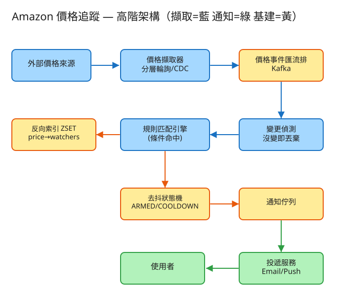

A 通知/Fan-out 看故事就懂 輕鬆讀 25 分鐘
你在 Amazon 上看到一支耳機要 3000 元，覺得太貴。你按下「降到 2400 就通知我」。 幾天後價格真的掉到 2400，你的手機「叮」一聲——這就是價格追蹤。
聽起來很簡單對吧？難的是：商店裡有好幾億件商品，盯著它們的人有好幾千萬， 每件商品價格隨時在變。系統要做到：價格一變，瞬間找出「誰想要這個價」並只通知對的人，而且不能因為價格上下抖動就把人吵到退訂。
很多人第一次看這題會想：「不就是把價格存起來，便宜了就寄信嗎？」——這想法漏掉了兩個會把系統壓垮的真正難關。
價格追蹤的核心難關就是這個：一筆價格變動，要飛快地對上「在等這個價的所有人」。這叫條件匹配。
第二個難關更隱形：價格常常在你的目標價附近上上下下抖（2400→2410→2399→2405…）。 如果你「每次低於 2400 就發一次」，使用者一個下午就被你吵幾十次，直接退訂。怎麼讓它只在「真的降到了」時響一次，就是第二個難關（叫去抖）。
💭 停一下：為什麼「逐一問每個人『你要的價到了沒』」在這題行不通？
別被「系統」嚇到。整件事其實就是闖 4 關，一關一關來：
要知道降價，得先持續知道每件商品「現在多少錢」。但商品有好幾億件，不可能每件每秒都去問一次（伺服器會被你問爆，成本也炸）。
👉 面試時先問一句：「價格是商店會主動通知我們，還是我們得自己去一直問？」答案會大大改變這一關怎麼做。
價格變了，馬上要回答：「降到這個價，剛好踩中誰設定的門檻？」這就是第 2 節說的「徵人啟事配對」難關。
這本「照目標價排好、能一翻就命中」的名冊，工程上叫 反向索引（reverse index）。 它把「逐一問一千萬人」變成「翻到那一頁、往後撈」，速度天差地遠。
命中的人找到了，先別急著發！價格會在門檻附近抖來抖去，如果每次低於門檻都發，使用者會被轟炸。
系統靠一個三檔狀態來管這件事（像門鎖的三個位置）：
這個三檔狀態的循環就叫去抖狀態機，是這題面試最常被追問的核心。
熱門商品（像新款 iPhone）可能上百萬人同時在等降價。一旦降價，要同時通知這麼多人。
這個「一筆降價 → 炸開成上百萬則通知」的動作，就叫 fan-out（扇出），也是這一組（A 組）的共同主題。
工程上的「取捨」聽起來很抽象。換個方式記：這個系統最怕三件事，每個設計都是為了避開某個「怕」。

✏️ 用 Excalidraw 開啟編輯（diagram.excalidraw）白話導讀，由左到右一路看：
看完上面，這些詞你其實都已經懂了，這裡只是把「工程術語 ↔ 白話」對起來，Part 2 會用到：
| 工程術語 | 白話解釋 |
|---|---|
| 反向索引 | 照目標價排好的「名冊」：新價一來，翻到那頁往後撈就是達標的人 |
| 條件匹配 | 「這個價，剛好踩中誰設的門檻？」的配對動作（徵人啟事配對） |
| 去抖（debounce） | 價格抖來抖去時，讓通知「響一聲就好」、別連響 |
| 狀態機 ARMED/TRIGGERED/COOLDOWN | 三檔位置：待命 / 剛響過 / 冷靜中 |
| 冷卻期（cooldown） | 響過之後安靜一陣子（如 24h），這段時間不再為同件事吵你 |
| 遲滯帶 / 回升安全線（hysteresis） | 價格要漲過一條線才重新武裝，避免在門檻上下反覆觸發 |
| fan-out（扇出） | 一筆降價 → 同時通知超多人 |
| 分層輪詢 | 熱門商品常去拿價、冷門商品久久拿一次（像醫院分輕重症） |
| CDC（變更資料擷取） | 商店「主動通知」我們價格變了，省得我們一直問 |
| at-least-once | 「至少送一次」：寧可重送也不漏送 |
| 冪等 / 去重 | 同一次達標只算一次，不會重複發 |
| 佇列 (Queue) | 排隊的待辦清單，工人從前面一個個拿來做 |
| QPS | 每秒幾筆請求（衡量「多忙」的單位） |
| DLQ（死信佇列） | 「怎麼送都送不到」的訊息丟進的回收桶，事後檢討用 |
| 水平擴展 | 不夠快就「多找幾台機器一起做」 |
我們估幾個關鍵數字（數字不必背，重點是感受它的「形狀」）：
| 估什麼 | 大概數字 | 所以呢？ |
|---|---|---|
| 有多少商品 | ~5 億件 | 不可能每件都常常去問價（成本爆炸）→ 要分層輪詢 |
| 有多少「追蹤」關係 | 5000 萬人 × 平均 4 件 ≈ 2 億條 | 匹配不能逐條掃 → 要反向索引 |
| 每天多少件變價 | 5% 商品變價 ≈ 2500 萬/日 ≈ 每秒 ~290 筆 | 事件量其實不大，真正的爆點在後面 |
| 一筆變價會命中多少人 | 熱門商品單筆可命中數萬人 | 通知量遠大於變價量 → fan-out 才是壓力來源 |
💭 停一下：每天變價才 2500 萬筆（不算多），為什麼系統還是可能被壓垮？
這題只要記住幾張「點餐單」：
① 使用者建立追蹤（最常用）
POST /api/v1/watches
給我：{ 哪個使用者, 哪件商品, 想要的目標價(或跌幅%) }
我回：201「建好了！狀態：ARMED（待命）」門檻有兩種：「降到絕對價」（如 2400 元）或「從基準跌幾 %」（如 -15%）。後面會看到，跌幅其實可以先換算成一個「絕對觸發價」，這樣兩種門檻就能塞進同一本名冊統一處理。
② 取消 / 改門檻
DELETE /api/v1/watches/{追蹤編號}
PATCH /api/v1/watches/{追蹤編號} 給我：{ 新的目標價 }改了目標價，記得做兩件事：更新名冊裡這個人的位置（排序變了），並把狀態重設回 ARMED（重新待命）。
③ 查我的追蹤清單與狀態
GET /api/v1/users/{使用者}/watches
我回：[{ 商品, 目標價, 目前狀態, 已發幾次提醒, 上次價格 }, ...]④ 內部：價格擷取層送來新價格（不對外）
POST /internal/prices 給我：{ 哪件商品, 新價格, 時間 }
→ 系統收到後做四件事：變更偵測 → 匹配 → 去抖 → 通知 fan-out注意第 ④ 張是「內部」點餐單——只有自家的價格擷取器會用，不開放給外面，使用者碰不到。
每件商品一列：商品編號、現價、更新時間、輪詢分層(熱/溫/冷)。
多存一欄「分層」，是為了讓拿價格那關知道「這件要常拿還是久久拿一次」。
每個追蹤一列：追蹤編號、哪個使用者、哪件商品、門檻類型(絕對價/跌幅)、門檻值、狀態(ARMED/TRIGGERED/COOLDOWN)、冷卻到何時、已發幾次。
這本就是去抖狀態機的「記憶」——每個人現在是「待命」還是「冷卻中」都記在這。
給定一件商品，要能瞬間取出所有在等的人，而且照目標價排好序。 工程上常用 Redis 的 ZSET（排序集合）：以「目標價」當排序分數。
記「哪個追蹤、哪次達標、發給誰、何時發」。
用 (追蹤編號 + 這次觸發的時段) 當鑰匙——同一次達標只算一次，就能做到「重送也不會讓你收到兩封」（這就是冪等）。
| 哪裡會塞車 | 怎麼拓寬 |
|---|---|
| 拿價格：幾億商品每件都常去問 | 分層輪詢（熱門常拿、冷門少拿）；能改成「商店主動通知」(CDC)更好 |
| 一堆「價格其實沒變」的事件灌爆下游 | 變更偵測：跟上次比，沒變就直接丟掉，不打擾後面 |
| 匹配：一千萬人逐條比大小 | 用排好序的名冊（反向索引），翻到那頁往後撈 |
| 超熱門商品：那本名冊太大、單點壓力 | 把這本名冊再切成幾份分開放 + 本地快取 + 批次處理 |
| 通知洪峰：一筆變價瞬間命中幾萬人 | 通知佇列削峰（先排隊慢慢送）+ 多工人並行 + 每人限流 |
| 價格抖動造成反覆觸發 | 去抖狀態機 + 冷卻期 + 回升安全線 + 冪等鍵 |
「Part 1 的三個怕」是核心取捨。這裡補幾個常被面試官追問的：
讀十遍不如玩一遍。這題有一個真的可以跑的小程式，讓你親眼看到「匹配 + 去抖狀態機」：
# 啟動（在這題的 demo 資料夾裡）
cd demo
php -S localhost:8004 -t public
# 然後瀏覽器打開 http://localhost:8004玩過 demo 了，來掀開引擎蓋看看「那幾關到底是哪幾段程式做的」。 好消息：核心只有三個小檔，剛好對應前面講的工作。不用會 PHP，我把程式翻成白話、只留關鍵那幾行，看註解就懂。
新價格進來的第一關，先問一句「真的變了嗎？」。沒變就直接丟，不去吵後面的人。
function push(商品, 新價) {
上次價 = 記錄裡這件商品的價格
if (上次價 和 新價 幾乎一樣)
return 沒事; // ← 沒變 → 丟掉，下游完全不會被打擾
記錄[商品] = 新價 // 真的變了才更新、往下送
return { 商品, 新價, 上次價 }
}就這一行 if，把「其實沒變」的雜訊擋在門外。少了它，一堆「價格沒動」的空事件會白白灌爆後面每一關。
先看一個小聰明：不管你設「降到 2400」還是「跌 15%」，建立追蹤時都先換算成同一個「觸發價」：
觸發價 = (門檻是跌幅%) ? 基準價 × (1 - 跌幅/100) // 例：3000 跌15% → 2550
: 目標價 // 例：直接就是 2400兩種門檻統一成一個「絕對觸發價」後，就能塞進同一本名冊，用同一種比較處理——這是讓系統變簡單的關鍵一步。
然後匹配就是這麼一句：
function 找出誰在等(商品, 現價) {
回傳所有「同一件商品 且 現價 <= 它的觸發價」的追蹤
}這就是前面說的「翻到 2400 那頁、往後一撈」。demo 為了好懂用一個迴圈過濾；真實系統把它換成 Redis 的 ZSET（排好序的名冊），用 ZRANGEBYSCORE 一次 O(log N) 撈出所有達標的人——邏輯一模一樣，只是換更快的工具。
這是全題的心臟。每個達標的人，先問「它現在是哪一檔？」再決定要不要真的發：
if (這個人達標了) {
if (狀態 == ARMED) { // ← 只有「待命」才會真的響
狀態 = TRIGGERED
冷卻到 = 現在 + 30 秒
發出通知(...) // 響一聲！
狀態 = COOLDOWN // ← 響完馬上進「冷卻中」
}
// 已經是 COOLDOWN？就算還在門檻下，也不發 → 抖動被吸收
} else { // 沒達標（價格回升了）
回升安全線 = 觸發價 × 1.05 // ← 遲滯帶：要漲過這條線才算數
if (狀態==COOLDOWN 且 現價 >= 回升安全線 且 冷卻時間已過)
狀態 = ARMED // 重新待命，下次降價才會再響
}前面講的「ARMED → TRIGGERED → COOLDOWN → 回 ARMED」整套就是這段 if。三檔狀態 + 冷卻 30 秒 + 回升安全線（×1.05），全在這裡。這也是面試官最愛追問的一段。
💭 停一下：為什麼「響完」要馬上把狀態設成 COOLDOWN，而不是留在 TRIGGERED？
真的要發了，最後一道保險：同一次達標，絕不發成兩封。
週期 = 現在時間 ÷ 30秒（取整） // 同一個冷卻週期算「同一次」
鑰匙 = hash(追蹤編號 + 週期)
if (這把鑰匙發過了) return 跳過; // ← 冪等：同一次只發一次
記下這把鑰匙; 真的送出通知就算上游因為「寧可重送也不漏送」（at-least-once）重複丟了同一筆，投遞層一看「這把鑰匙已存在」就跳過。這就是把「至少一次」變成「剛好一次」的體驗。
| 關卡（前面講的） | 哪個檔 | 關鍵那段 |
|---|---|---|
| ① 拿價格 + 變更偵測 | PriceFeed | push() 的那行 if |
| ② 匹配誰在等 | Watchlist | 找出誰在等()（反向索引） |
| ③ 去抖（響一聲就好） | AlertEngine | ARMED / COOLDOWN 的 if |
| ④ 不重發 | AlertEngine | 發送前的「鑰匙」檢查 |
👉 重點：真實系統會把「JSON 檔 + 迴圈過濾」換成「分片資料庫 + Redis ZSET + Kafka 佇列」， 但上面這幾段判斷邏輯一字都不用改。所以讀懂這個小 demo，你就讀懂了這題的核心。
先不要看答案，自己用講給朋友聽的方式回答看看（講得出來才是真的懂）：
價格追蹤 = 幫幾千萬人盯著降價的自動管家。
4 個關卡：① 分層拿價格 → ② 用排好序的名冊（反向索引）匹配誰在等 → ③ 去抖（門鈴按一次別連響）→ ④ 一群工人同時推播（fan-out）。
3 個怕：怕吵到退訂（去抖最致命）、怕慢/算不動（反向索引 + 分層輪詢）、怕漏發/重發（at-least-once + 冪等去重）。
工程細節一句話：壓力不在變價筆數、在「命中後放大的通知洪峰」→ 用「點餐單(API)」溝通、新價先過變更偵測 → 四本筆記本（商品/追蹤/名冊/提醒）＋反向索引排序 → 去抖狀態機（冷卻＋回升安全線）壓低發送量 → 找出塞車環節各自拓寬。
想看更精簡、面試速查用的版本？👉 前往完整版（同樣內容的工程速查格式）。